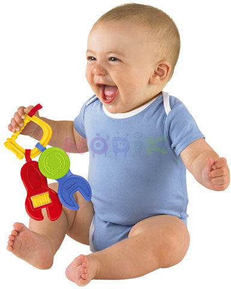

Первые игрушки, первые игры
Когда ребенок перекладывает погремушку из руки в руку, когда он пыхтя строит первую в своей жизни башню из кубиков или сосредоточенно открывает и закрывает коробочку, это ни в коем случае не бессмысленные действия и не забава, это напряженная работа – ребенок познает и осваивает мир.
Наблюдая за ним, вы можете заметить, что игра малыша меняется, он овладевает все новыми действиями, стремится решать все более и более трудные задачи. В какие же игрушки играть малышу? Как организовать его первые игры?
Любимой игрушкой, неизменно привлекающей внимание младенца, может быть кукла-неваляшка. Она интересна еще и тем, что издает мелодичные звуки при покачивании. В этом возрасте в кроватку малыша можно посадить красивую куклу в ярком платье. Ребенок будет ее с любопытством рассматривать. Конечно, время от времени игрушки следует менять. Можно повесить на стене разноцветные воздушные шарики, цветные картинки или прикрепить вертушку из легкой яркой бумаги, которая начинает вращаться при малейшем движении воздуха.
В возрасте от 4 до 5 месяцев после появления первых хватательных движений малыш протягивает к игрушкам ручки, перебирая пальчиками, и играет ими, постукивая ладошкой по погремушке. После 5–6 месяцев детям нравится держать игрушки в руках, греметь ими, пробовать на вкус. Хорошей игрушкой становится небольшая цветная тряпочка. Малыш мнет ее в кулачке, растягивает, трясет. Ему интересно, какие изменения происходят с ее формой. Кроме того, он пробует свои силы, постепенно начиная понимать, что именно он сам является источником этих изменений. Если вы воспользуетесь такой игрушкой, вам необходимо позаботиться о том, чтобы ткань была чистой и не линяла, так как рано или поздно все, чем играет ребенок, оказывается у него во рту.
Даже очень маленькие дети любят играть со взрослыми. В течение столетий из поколения в поколение переходят игры-забавы. Однако все чаще стали встречаться родители, которые даже не представляют себе, как играть с младенцем. А ведь игры не только приносят детям радость, поднимают эмоциональный тонус, развивают активность, но и помогают установить теплые, близкие отношения с домашними. Специальные исследования показали, что уже на 1-м месяце жизни ребенка можно наблюдать его совместные действия с матерью. Как это происходит и что это за действия? Попробуйте понаблюдать, как синхронно ведут себя младенец и взрослый, разглядывая то яркую картинку, висящую на стене в комнате, то красочную игрушку. Вы обнаружите, что если взрослый общается с малышом, то в поведении пары есть большое сходство. Оба смотрят на один и тот же предмет. Причем определяющую роль играет ребенок, который и выбирает объект для рассматривания, а взрослый подстраивается под его интерес. То же самое можно наблюдать и во время самых простых игр. Присмотритесь, например, как бабушка играет с ребенком в «козу». Эта игра очень популярна в первом полугодии жизни. Изобразив мизинцем и указательным пальцем рога, бабушка приговаривает: «Идет коза рогатая за малыми ребятами», приближая бодающую руку к грудке или животику малыша. С возгласом: «Забодаю, забодаю!» – она легонько щекочет его, а малыш заливается смехом. То же самое проделывается и во время игры «Баран-баран». Здесь взрослый понарошку бодает ребенка головой. Наблюдая за игрой, вы, может быть, с удовольствие заметите, что на самом деле игрой «дирижирует» ребенок. Он направляет поведение взрослого с помощью взгляда: то смотрит на бабушку, делающую ему «козу», то отводит взгляд в сторону, то снова смотрит на нее, регулируя тем самым ритм и темп взаимодействия.
А вот другая игра – «Ку-ку», в которую с удовольствием играют даже 3-месячные дети. Взрослый закрывает ладонями лицо и говорит: «Ку-ку, нет меня» – и тут же открывает лицо, с улыбкой глядя на малыша: «Вот он я!» Можно спрятаться за спинку кроватки и, произнеся «ку-ку», выглянуть со словами: «Вот где я!» Ребенок будет отыскивать взрослого, прячущегося в разных местах, ориентироваться на звуки его голоса и радостно вскрикивать при появлении партнера. В эту игру дети играют до конца 1-го года жизни и позже с огромным удовольствием. Со временем ее можно видоизменить, пряча личико ребенка под косыночкой, и он сам будет сдергивать ее смеясь.
Дети должны играть, и играть много. Игра для детей – мостик, который связывает их с окружающим миром, через игру ребенок входит в реалии жизни.